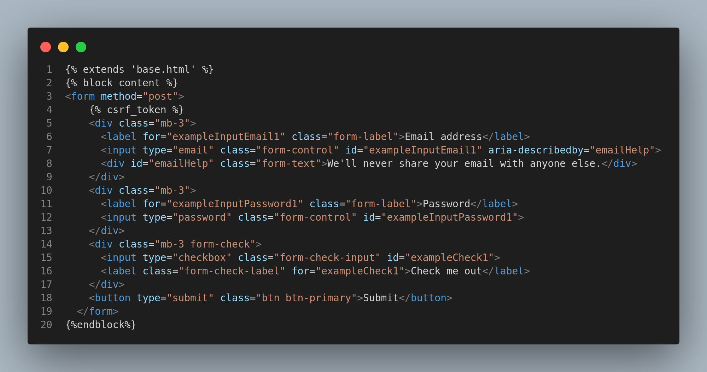
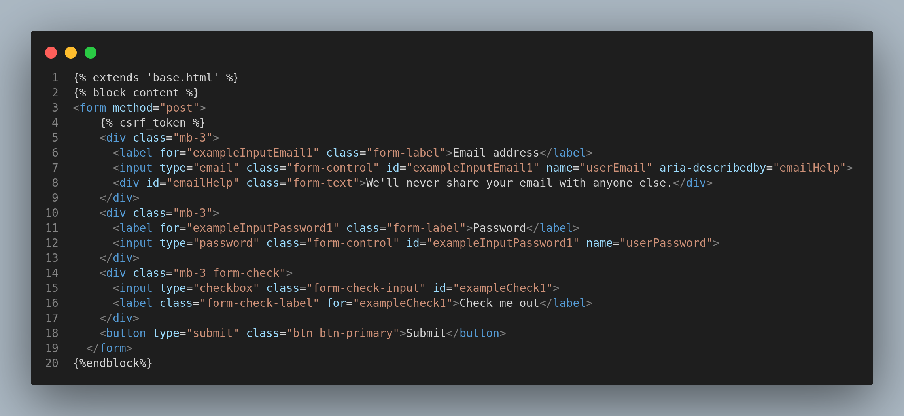
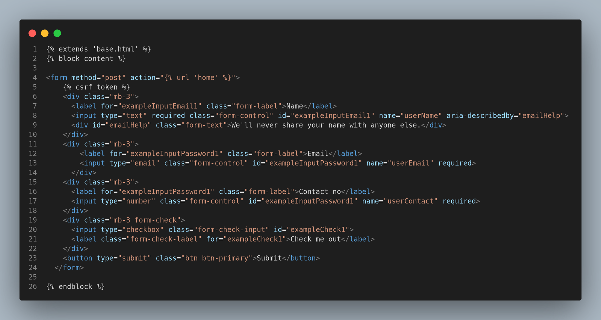

<h1 class="heading"></h1>
<ol class="topic-container" id="topic">
        <li class="topic" style="color: white;font-size: 1.5rem;"><a href="#csrfToken">CSRF Token</a></li>
        <li class="topic" style="color: white;font-size: 1.5rem;"><a href="#getPostMethod">Get Post Method</a></li>
        <li class="topic" style="color: white;font-size: 1.5rem;">Topic Name</li>
        <li class="topic" style="color: white;font-size: 1.5rem;">Topic Name</li>
</ol>

<div id="csrfToken">
    <a href="#topic">Topic</a>
    <h1 class="heading">CSRF Token</h1>
    <h3 class="details">Cross Site Request Forgery. It must be added at begining the any form. Check line 4 of this ss.</h3>
    
</div>

<div id="getPostMethod">
    <a href="#topic">Topic</a>
    <h1>Get Post</h1>
    <h3>Generally, get method does not use because of it's vulnerability. Post method used to visitors data. Check line 3 of 1st html code and check line 2 of 2nd python code.</h3>
    
    
    <h3>Task: Show visitor contact data on home page.</h3>
    <h3>Solution:</h3>
    
    
    <h3>Check line no 2-11 of python code.</h3>
</div>

